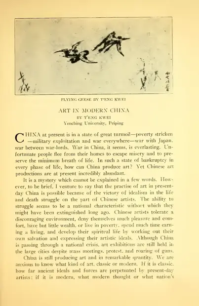

Art In Modern China.
访问原网页 ↗Visit original website ↗

S018 · T’eng Kwei / The Open Court；OpenSIUC数字化 · 1933
原文16页，印刷页479—494；附本人Flying Geese、Landscape After the Rain、A Chicken Family三幅图。Sixteen original pages, printed pages 479–494, with Flying Geese, Landscape After the Rain and A Chicken Family.
馆藏图像与原文Archived images and documents
- 1933 Open Court 飞雁 Flying Geese 原页1933 Open Court 飞雁 Flying Geese 原页 I039
- 1933 Open Court 雨后山水 Landscape After the Rain 原页1933 Open Court 雨后山水 Landscape After the Rain 原页 I040
- 1933 Open Court 群鸡 A Chicken Family 原页1933 Open Court 群鸡 A Chicken Family 原页 I041
- 1933 Art in Modern China 原文16页1933 Art in Modern China 原文16页 D001


来源页摘录Source-page excerpt
"Art In Modern China." by T'eng Kwei
Kwei, T'eng (1933) "Art In Modern China.," The Open Court: Vol. 1933: Iss. 8, Article 2. Available at: https://opensiuc.lib.siu.edu/ocj/vol1933/iss8/2
原始网址Original URL
https://opensiuc.lib.siu.edu/ocj/vol1933/iss8/2/原刊卷期与正文Original publication and text
第47卷（XLVII），第8期／总927期，1933年12月，页479–494。D172保留原期封面、目录和卷题名页；D001为正文。部分二手文献误写为第43卷，依原刊订正。